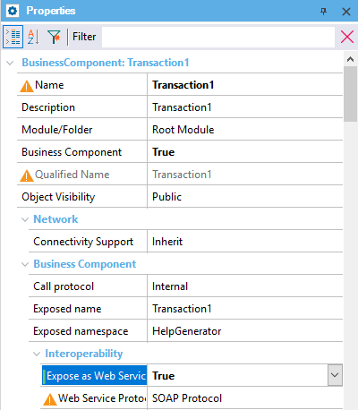

| False |
| True |
Objects: Transaction
Generators: Java, .NET, .NET Core
In order to facilitate the interchange of information between systems, the most common practice nowadays is the use of Web Services.
For that reason, if you have a Transaction object set as Business Component which returns any information, you can enable it to be published as a Web Service.
To achieve it, you have to set the object property Expose as Web Service to True:

This property applies only at design-time.